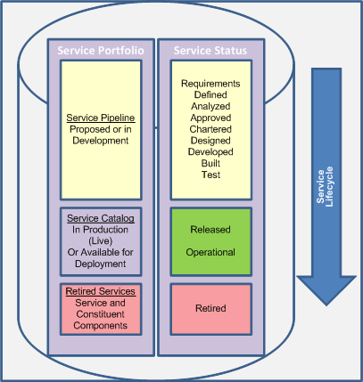
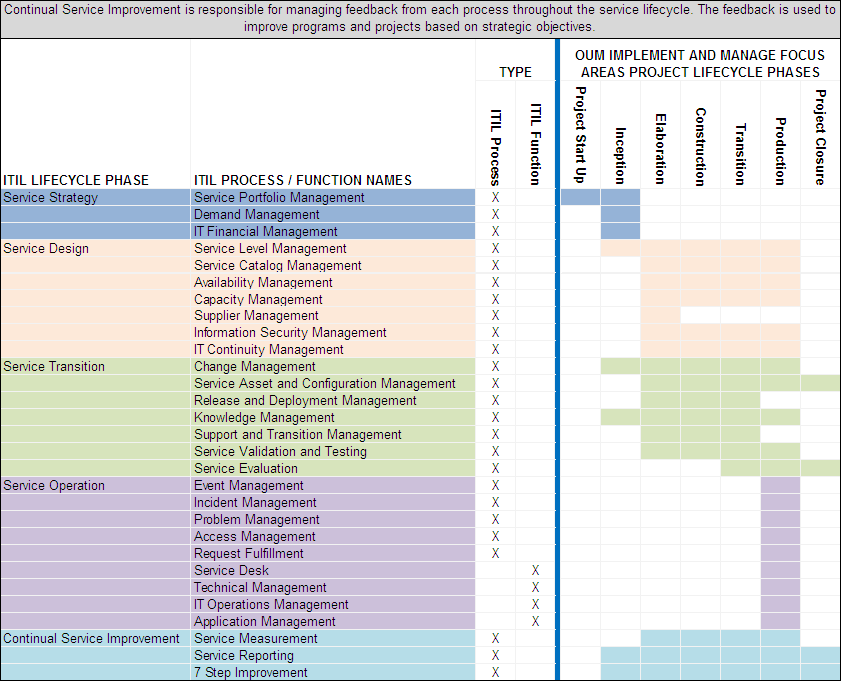
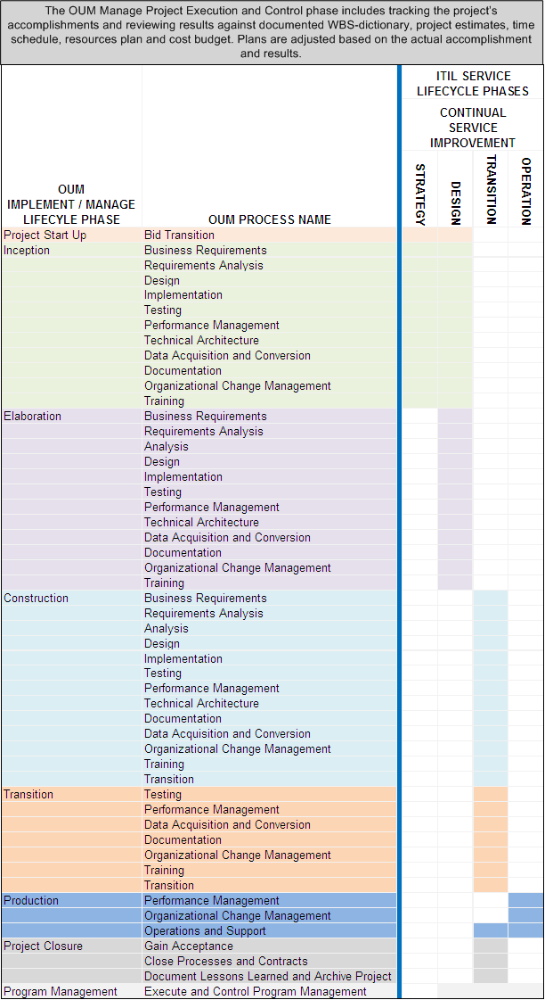

OUM |
Oracle Support Services Supplemental Guide |
||
Method Navigation |
Current Page Navigation |
||
|
|
||||||||
OUM incorporates and extends a number of industry standards including the Unified Process (UP), the Project Management Institute’s Project Management Body of Knowledge (PMI PMBOK), the Unified Modeling Language (UML) and Business Process Modeling Notation (BPMN). With the introduction of the Support Services Supplemental Guide, OUM now incorporates best practices pertaining to service support as embodied in the Information Technology Infrastructure Library (ITIL).
OUM and ITIL leverage the value of best practice frameworks to achieve excellence in the lifecycle management of any Oracle investment. The ITIL framework is business driven and addresses the way an IT organization operates defining what an IT organization should do. OUM is a project management framework defining how to successfully implement Oracle solutions. ITIL answers the question "Are we doing the right things?" OUM answers the question "Are we doing things the right way?"
The focus of ITIL V3 is creating, delivering and managing the lifecycle of IT services and requires project and program planning for success. OUM includes three focus areas – Manage, Envision, and Implement. OUM's Manage focus area provides a framework in which all types of projects can be planned, estimated, controlled, and completed in a consistent manner. OUM’s Envision focus area deals with development and maintenance of enterprise level IT strategy, architecture, and governance. Envision also assists in the transition from enterprise-level planning and strategy activities to the identification and initiation of specific projects. The Implement focus area provides a framework for developing and implementing Oracle solutions. Within ITIL, IT service delivery can be considered a project. Service as a project can be demonstrated as follows:
The ITIL Service Portfolio contains the status of all services that are currently offered, have been offered in the past, and those that are 'pipe dreams,' 'nice to have' or ideas for the future. The Portfolio is comprised of three sections:
As a service progresses through the Service Lifecycle it is allocated a relevant status. The statuses a service may be assigned include:
A service at any time can be 'retired,' especially when it is progressing as a 'project' in the pipeline phase. For example, during the recent 'Credit Crunch' it has been necessary for many organizations to review their current Service Portfolio and in some cases 'shelve,' or in other words, 'retire' services. In the future, these services may well be re-initiated and follow the Service Lifecycle again.
The following figure illustrates where the various Service Status values fit within the ITIL Service Lifecycle.

Service Portfolio and Lifecycle
The following figure shows the synergy between OUM and ITIL, illustrating how the various ITIL processes map to the OUM Implement focus area project lifecycle. In this example, the service lifecycle is initiated by a change in business requirements.

OUM and ITIL Synergy
To highlight the similarities between OUM and ITIL in the diagram above, ITIL V3 Service Lifecycle phases are superimposed over the OUM Implement focus area phases to reflect how the respective phase components are related. The small green rectangular boxes illustrate some of the common activities. Both frameworks focus on providing value to the business and address managing quality, risk and accountability. Lifecycle phases within OUM and ITIL have defined entrance and exit criteria. Activities are tracked, measured, and evaluated against critical success factors. Corrective actions are taken as needed to ensure the business requirements are met. OUM and ITIL focus on repeatability and reuse of work components with an emphasis on identifying opportunities for improvement.
From the perspective of ITIL, requirements are identified and agreed upon within the Service Strategy phase. The requirements and the defined set of business outcomes are documented within a Service Level Package (SLP). The SLP is passed to the design phase In the design phase is where a service solution is produced along with a Service Design Package (SDP) containing everything necessary to take the service through the remaining stages of the lifecycle. The SDP is passed to the Service transition phase where the service is evaluated, tested and validated. The Service Knowledge Management System (SKMS) is updated and the service is transitioned into the live environment where it enters the Service Operations phase. The Service Knowledge Management System is the central repository of the IT organization’s data, information and knowledge. The SKMS consists of a set of tools and databases that are used to manage knowledge and document the IT ecosystem. Whenever possible, the ITIL Continual Service Improvement Process identifies opportunities for the improvement of weaknesses or failures anywhere within any of the lifecycle phases.
The following tables compare the Services Management lifecycle phases and processes described within ITIL with the Implement and Manage focus area lifecycle phases and processes described within OUM.
ITIL defines a process as a structured set of activities designed to accomplish a specific objective. A process takes one or more defined inputs and turns them into defined outputs. A process may include roles, responsibilities, tools and management controls required to reliably deliver the outputs. A process may define policies, standards, guidelines, activities, and work instructions required to carry out the process. A process is considered a closed-loop system because the results of the process typically provide for change or transformation of an event to a specific goal. Feedback about the results of a process provides improvement opportunities.
An ITIL function is defined as a team or group of people specialized to perform certain types of work and responsible for specific outcomes. A function is self contained with capabilities and resources such as work methods, knowledge and experience. Coordination between functions is achieved by those groups having responsibilities within shared processes. An example of a function is the Service Desk. A Service Desk is staffed by a group of people who provide a central point of contact for the reporting of difficulties, complaints or questions and are critical to the operation of the Incident Management process.
ITIL Lifecycle Phases and Processes Mapped to OUM Implement and Manage Focus Areas Project Lifecycle Phases

OUM Implement and Manage Focus Area Lifecycle Phases and Processes Mapped to ITIL Lifecycle Phases

ITIL addresses how IT organizations as a whole should operate; the OUM Implement and Manage focus areas, which are the center point of the mapping above, address how Oracle solution implementation projects should be executed. Both frameworks rely heavily on process and the use of tools to enable consistent execution of processes. The ITIL framework and the OUM framework support each other in a way that propels services and operations to a greater level of proficiency. Both frameworks address the need to manage quality, risk, and accountability.
While the tables above serve to illustrate the full extent of the common areas shared by OUM and ITIL, the supplemental guidelines provided in this version of the guide focus on the ITIL best practices contributing to the lifecycle management of the My Oracle Support Services portal, which are concentrated in the Service Design and Service Transition lifecycle phases of the ITIL framework.

Copyright © 2006, 2016, Oracle and/or its affiliates. All rights reserved.